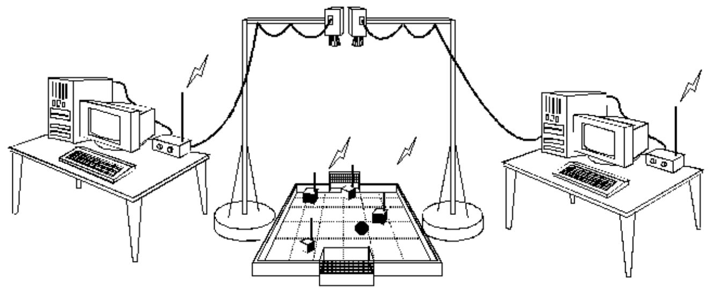

A categoria se trata de uma competição de futebol de robôs. Essa categoria está presente em competições, como: Competição Brasileira de Robótica (CBR) e a Competição Latino-Americana de Robótica (LARC). Nessa competição dois times teleoperados de três robôs se enfrentam em uma partida de futebol. Cada equipe é responsável por desenvolver todo o software e hardware para controlar seus robôs, possuindo uma câmera no centro do campo de 2 a 2.5m de altura, as equipes rodam algoritmos de visão computacional para reconhecer as poses de seus robôs, afim de manda-los executar alguma ação desejada.

Como em toda competição, existem regras. Quanto ao ambiente, o campo possui 150cm x 130cm com paredes de 2.5cm de altura e 2cm de largura. Os gols possuem 10cm x 40cm extrapolados da dimensão do campo. Nos quatro cantos do campo existem triângulos de 7cm x 7cm em seus catetos.
Quanto aos robôs, eles não podem possuir mais do que 7.5cm x 7.5cm x 7.5cm, podendo possuir uma proteção extra de 0.5cm x 0.5cm x 0.5cm. Os robôs podem possuir cavidades para carregar a bola, desde que não obstruem mais do que 30% da área da bola. Quanto as cores no campo, a bola deve ser laranja, o campo deve possuir a cor preto fosco com marcações em branco, cada robô de um time deve utilizar uma etiqueta da cor azul ou amarelo, sendo ela diferente entre os times. Os robôs de um tipo também podem possuir uma segunda etiqueta, afim de distinguir-los entre sí, desde que não sejam da cor preto, branco, amarelo, azul ou laranja.
Também existem regras quanto a faltas, penaltis e tiro livre. As regras em inglês pode ser vistas aqui e as regras em português aqui.
Trabalhos realizados no VSSS
O SIRLab iniciou o desenvolvimento de um framework de desenvolvimento para a categoria IEEE Very Small Size Soccer, constituido dos projetos VSS-Vision, VSS-Simulator, VSS-Viewer e VSS-SampleStrategy. O framework tem o intuido de auxiliar equipes iniciantes na categoria, fornecendo programas "fechados" de utilização global, como nas categorias Small Size League, RoboCup 2D Soccer Simulation e RoboCup 3D Soccer Simulation. O framework utiliza as bibliotecas Protobuf e ZMQ para realizar a comunicação via socket entre os softwares fornecidos.
VSS-Vision
O VSS-Vision é um programa de visão computacional para a categoria IEEE Very Small Size Soccer. Esse sistema de visão é baseado no SSL-Vision, padrão da categoria Small Size League, o software utiliza a biblioteca OpenCV para reconhecer as etiquetas em campo. O sistema abre uma transmissão multicast para enviar os estados do jogo. O projeto está no github do SIRLab sob licença GPL 3.0 e sua documentação encontra-se aqui.
VSS-Simulator
O VSS-Simulator é um simulador de partidas para a categoria IEEE Very Small Size Soccer. O simulador visa a possibilidade de facilitar o desenvolvimento de estratégias para a categoria, possibilitando executar inúmeros jogos acelerando o tempo em x10 e x100 e gerando um relatório dos jogos. O simulador foi construído utilizando a biblioteca Bullet Physics, conhecida por sua precisão, porém foram executados adaptações na biblioteca, afim de atender melhor nosso propósito. O sistema abre uma transmissão multicast para enviar os estados do jogo e recepções unicast para receber os comandos de cada robô. O projeto está no github do SIRLab sob licença MIT.
VSS-Viewer
O VSS-Viewer é um visualizador de estados para a categoria IEEE Very Small Size Soccer. Esse visualizador é baseado no monitor padrão da categoria de futebol simulado, RoboCup 2D Soccer Simulation. O software possui um ambiente 3D que foi desenvolvido com a biblioteca freeglut em sua versão mais atual, o que possibilita uma representação da realidade simples e fiel, com pouco custo computacional. Com esse software é possível obter o estado do jogo dos softwares VSS-Vision e VSS-Simulator. O projeto está no github do SIRLab sob licença GPL 3.0 e sua documentação encontra-se aqui.
VSS-SampleStrategy
O VSS-SampleStrategy é uma estratégia exemplo de como trocar informações com o VSS-Vision e VSS-Simulator. Inicialmente está sendo desenvolvida em C++, porém quando a framework estiver pronto, poderá ser desenvolvida em qualquer linguagem que suporte Protobuf. O projeto está no github do SIRLab sob licença GPL 3.0.